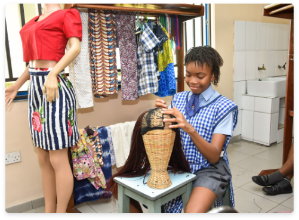

STUDENT LIFE
VOCATIONAL ACTIVITIES

Sporting Activities
Great emphasis is placed on sports in the schools. The children are encouraged to participate in various sporting activities such as Basketball,football, cricket, volleyball, chess, handball, gymnastics, athletics, tennis and swimming.
The students take part in intercollegiate games among private Secondary schools in Lagos. They also engage some private schools and a few notable public schools in the elitist game of cricket.
The students are trained in these sports by specialists as well as visiting coaches. Apart from sports, a child must belong to one recreational club and one subject-based club.
Recreational Clubs :
- Board Games
- Cultural Club
- Martial Arts
- Boys Scouts
- Girls Guides
- Red Cross
- Gymnastics Club
- Young Disciples International
- Choral Group
- Dance and Drama


Subject based Clubs :
- JETS club
- Geographical Society
- Home Makers Club
- Press and Literary
- French club
- Business
- Arts & Creativity Club(A.C.C.)
- ICT & Coding Society
- Robotics Club